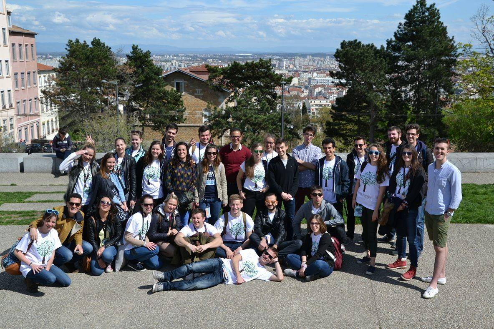
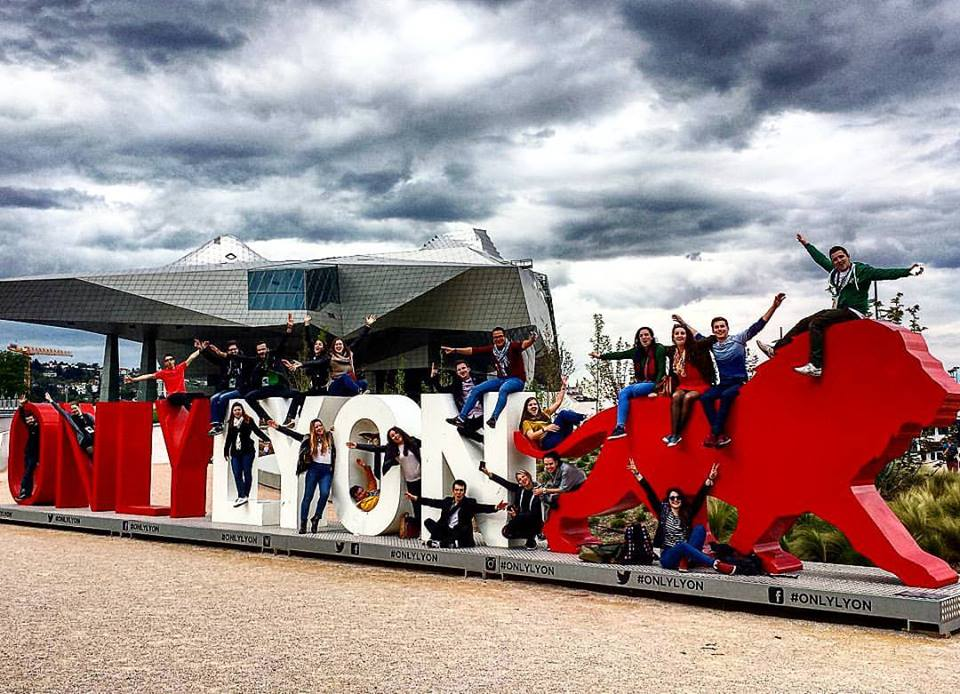

Have you ever wondered what brilliant concept is hidden behind a simple thing such as the velcro attachment for shoes ? Do you know why plane wings have that particular form on their end ?
What if we told you that those two examples and many others have their origin in nature ?
Biomimetics: the art of creating inspired by nature.
Come to BEST Lyon and you will learn all about this incredible topic !
Because nature has all the answers ... because we only have to follow its example in order to resolve any of our problems !
Join our Biomime-trip and you will discover the wonderful city of lights, gastronomy and cinema, always hand in hand with our awesome organisers and the other lovely participants who will be sharing with you this amazing adventure.
You can find the course syllabus [here] .
Pre-materials :
Article : "Globally networked risks and how to respond", Dirk Helbing
Article : "Towards a deeper philosophy of biomimicry", Freya Mathews
Article : "The Philosophy of Biomimicry", Henry Dicks
Website : RCSB Protein Data Bank
Some examples of biomimetics
Velcro was inspired by the tiny hooks found on the surface of burs.
Leonardo da Vinci's design for a flying machine with wings was based closely upon the structure of bat wings.
Aerodynamic design on high-speed trains is inspired by birds’ beak.
Schedule
Download hereSurvival guide
Download hereSome pictures from our last Spring Course :
 Main organiser : Candela Yuste, candelayuste[at]gmail.com
Website support : Basile Samel, basile.samel[at]insa-lyon.fr
LBG president : Tom Van den Maegdenbergh, tom.maegdenbergh[at]gmail.com